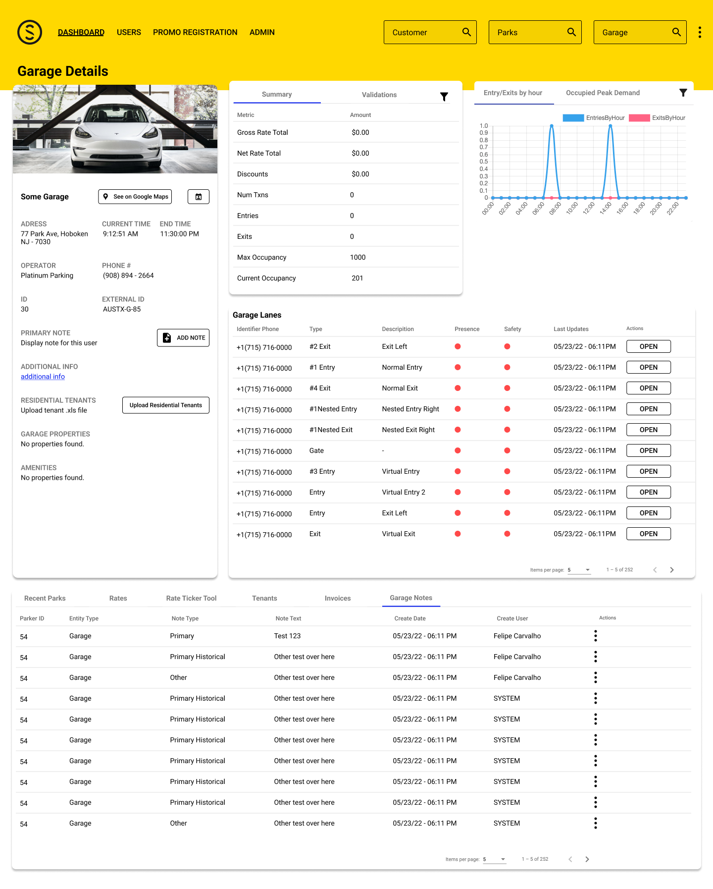
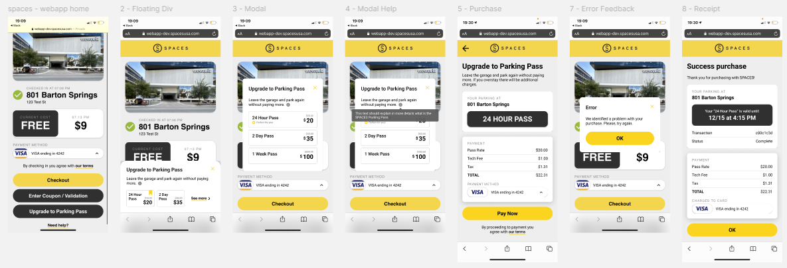

Three surfaces, one operation, no design system.
SPACES Parking redefines the parking experience with contactless solutions — bridging the gap between physical and digital so users can access, pay for, and exit a facility from their phone. By the time I joined as Senior Designer and design manager, the operation reached from New York City to Texas to the West Coast and was expanding fast. The technology suite worked. The design layer didn’t.
I led design across multiple surfaces with two designers (Felipe and Iara) under my direction: the Admin Portal the call center used to manage operations, the Operator Portal garage staff used in real time during shifts, and the Parker App end-users tapped to pay. Different stakeholders, different jobs, all pulling on the same broken foundation.

The portals were built without design. We had to start by un-building them.
The original Admin and Operator Portals had been developed without design expertise. There was no documentation, no UX flows, no structured designs — just a collection of screenshots patched together in basic tools. Earlier applications were disjointed, the workflows were convoluted, and the call-center staff who lived in these tools all day were getting nothing back from the interface.
“The challenge was reimagining the portal from scratch — addressing key usability issues and integrating modern design principles, while minimizing change to the existing workflow, delivering value to developers and the client within tight deadlines.”
I led the effort across three fronts at once. Documentation — reverse-engineering the existing flows so we knew what was actually shipping. Component library — establishing the foundational set of primitives that would evolve into a system. Stakeholder alignment — sitting with call-center support, operations, and the business analysis team until we agreed on which features were load-bearing and which had grown out of accident.



One library, fluently shared, before any redesign.
I led the team in building an initial library of components that would evolve into a full design system. The work involved mapping and analyzing the core problems, developing standardized components, and establishing consistent visual and interaction language across every surface. Building this foundation was how we earned the right to redesign the portals — without it, every fix would have been local, every regression inevitable.
The shift from no-formal-design to a structured, design-centric approach was transformative. Process started with extensive research and dozens of interviews with call-center support and operations agents. They needed better ways to manage core tasks: opening lanes, issuing refunds, verifying payments. Operators needed real-time support during shifts. The component library had to account for both the desk-bound flow and the on-the-ground one.
“One of the key factors in our success was the strong collaboration between design and business analysis. Bruno’s insights into the operational requirements and Accalia’s perspective on call-center support helped us prioritize features and decisions that would have the most impact.”
Version 2.0 was a re-conceptualization, not a redesign.
After laying the groundwork with initial iterations, certain aspects of the Admin Portal needed more than incremental updates. Existing flows were deeply integrated into the system; minor tweaks couldn’t reach the level of usability we wanted. We went back to first principles and rebuilt.
Workflows were deconstructed and redesigned to align with the evolving needs of call-center staff and the broader business goals. The redesign integrated features that weren’t possible within the original constraints — user and garage notes, historic parking sessions, special refunds — alongside more intuitive navigation, better reporting, and more efficient task management. Every choice was informed by the people doing the work, not by a wishlist.


The transition to 2.0 was the milestone. More than a redesign; a transformation that laid the foundation for sustained efficiency, user satisfaction, and the company’s next round of growth.
Operators stopped fighting the tool. The support load shifted.
The Admin Portal saw significant improvements in task completion times and user satisfaction. The Operator Portal gave garage staff the tools they actually needed for daily operations. The biggest measurable shift: the call center resolved 20% more support tickets per day, freeing the team to handle the cases that had been sitting in the queue. Beyond the metrics, the redesigned applications played a key role in the client’s expansion — first across the United States, then to Europe.
The groundwork is what made it durable. By taking the time to clean things up, document the flows, and build the component library, we laid the foundation for the redesigns and the systems work that came after. Thorough documentation and a systematic approach: lessons that guided us through, and continue to.